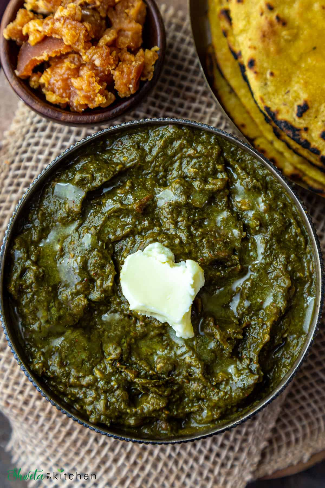
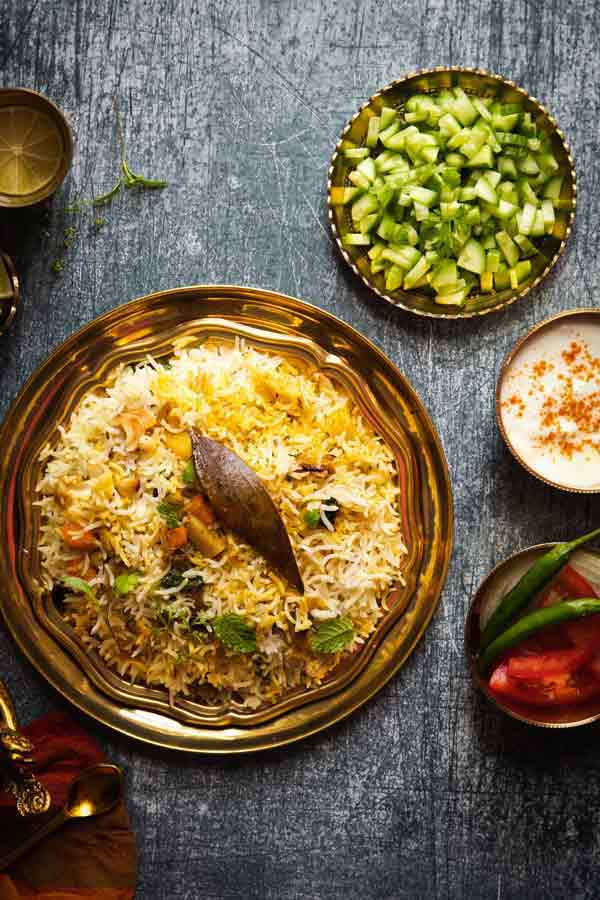
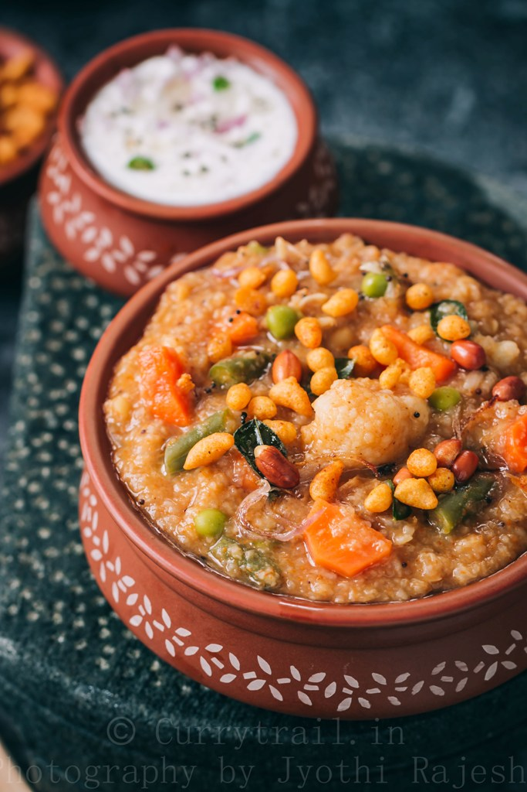
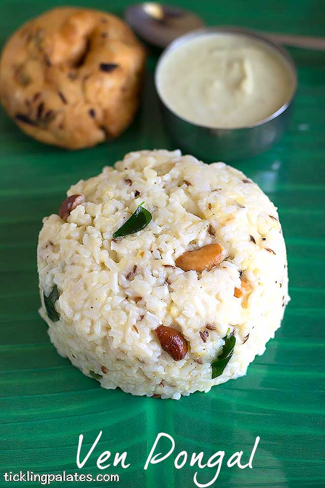

Misal Pav
Firstly, in a large kadai heat 3 tbsp oil and splutter 1 tsp mustard, 1 tsp jeera and few curry
leaves.
also add ¼ tsp turmeric, 1 tsp chilli powder, 1 tsp coriander powder and 1 tsp garam masala.
saute on low flame till spices turn aromatic.
now add in prepared masala paste and saute well.
cook till the oil is released from masala paste.
add in cooked matki, small piece jaggery and ½ tsp salt. give a good mix.
also add 5 cup water and adjust consistency.
cover and boil for 10 minutes or till misal is cooked completely.
once the misal is cooked, oil starts to float indicating misal is ready.
in a serving plate, take matki usal add some farsan over it.
top with chopped onions and coriander leaves over it.
also pour ladleful of kat or gravy from sides.
finally, serve misal with pav and lemon wedges making a complete misal pav recipe.
Makki Di Roti & Sarson Da Saag

Wash your greens and roughly chop them. Chopping them will help make the gravy naturally creamier.
In an Instant Pot, add the greens, garlic, and water. Pressure cook on high pressure for 10 minutes and
allow for natural pressure release.
I didn't test the instructions for a regular pressure cooker, but you can pressure cook on medium heat for 4
whistles.
In the mean time, prepare the base of the sarson ka saag. In a medium pan, heat tbsp avocado oil over medium
heat. Add a pinch of hing and allow it to bloom for a few seconds. Add cumin seeds. Stir for 30 seconds to a
minute, making sure the seeds don't burn.
Add garlic, ginger, and chilis. Stir for 2 minutes. Add the red onion. Cook until translucent. Add kasoori
methi and salt to taste. Finish for a few minutes.
Turn on the Instant Pot sauté function or leave your pressure cooker open over medium heat. Add 1 tbsp corn
flour, a little bit at a time, and as you add it, use a potato masher to further break down the greens and
incorporate the corn flour. (If you don't have a potato masher, try mashing and stirring with a ladle.)
Continue to simmer for 10 minutes. Reduce heat if it starts to bubble aggressively.
Melt some vegan butter in and serve!
Biryani

To start with the biryani recipe, you first need to marinate the chicken. For that, take a mixing bowl, add
salt, haldi, red chilli powder, garam masala powder, ginger garlic paste and mix well. Then add chicken
pieces and coat them well with the paste.
Now, heat desi ghee in a pan, add spices like cumin seeds, green and black cardamom, cinnamon, cloves and
let them splutter. Once done, add chopped onions and sauté them well.
The next step is, add chicken keema in the pan along with potato cubes and let them cook for some time. Once
done, add salt to taste, chopped green chillies and marinated chicken pieces. Stir well.
Add rice, 3-4 cups of water and mix it well. Once the rice is boiled, reduce the heat to low flame, add
kesar infused milk.
Serve with curd and enjoy!
Bisi Bela Bath

firstly, in a heavy-bottomed pan take ¼ cup coriander seeds, ¼ cup chana dal, 2 tbsp urad dal, 2 tbsp cumin,
½ tsp methi, 2 tbsp sesame and 2 tbsp poppy seeds.
roast on low flame until the spices turn aromatic.
also add ½ tsp pepper, 6 pods cardamom, 2 inch cinnamon, 5 cloves.
roast on low flame without burning the spices.
transfer to the plate to cool completely.
in the pan heat 1 tsp oil and add 20 dried red chilli, few curry leaves and ¼ cup dry coconut.
roast on low flame until the chilli turns crisp.
transfer to the same plate and allow to cool completely.
once the roasted spices are cooled completely, transfer to the mixer jar.
add ½ tsp turmeric and ¼ tsp hing.
blend to a fine powder and homemade bisi bele bath masala powder is ready.
Pongal

Wash rice 2-3 times with fresh water and soak it in the water for ½ hr. Wash dal and roast it in a pan for
3-5 min with 1 tsp of ghee .
Add roasted dal-soaked rice (drain the water) and water, and cook it on a low heat till it becomes soft in
texture and mushy. Add water if needed.
To get creamy consistency, add some hot water to bring it to a consistency you like. Add salt if needed and
stir well.
In a pan make the tempered mix using ghee, cumin seeds and crushed black pepper, ginger, curry leaves, green
chili, and asafoetida. Sauté for some time.
Then add turmeric, cooked moong dal and rice. Sauté for some time until the moong dal becomes aromatic
.
Pour another 250 ml of water and salt. Slowly mix well and cook it again on slow fire. Just ensure that the
bottom of the pan is clear.
Once done, serve with sambhar or chutney.
As some people like little runny, you can adjust the consistency by adding more or less water.